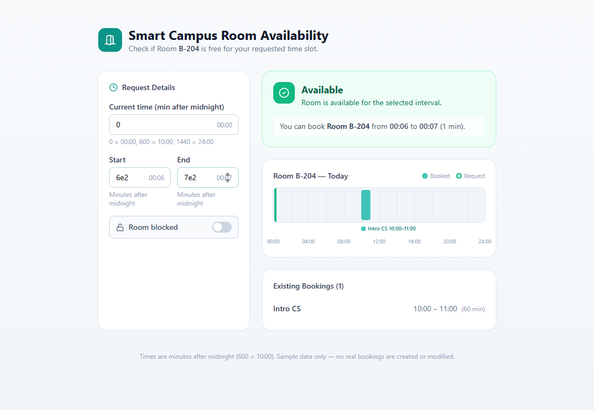
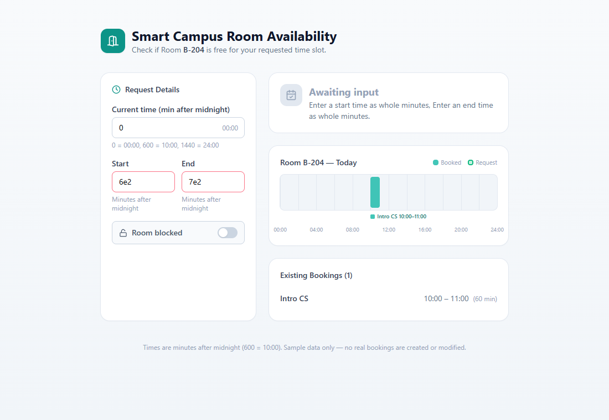
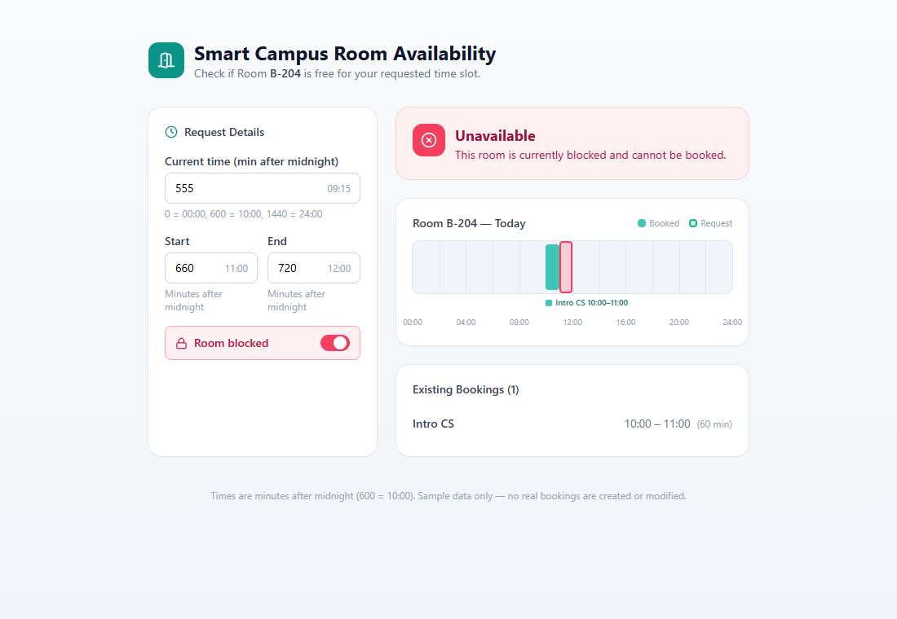

Smart Campus Room Availability (React + TypeScript + Vite)
baseline = d5af111final = b38123e (branch main)The audit, the improvements and the decision all rest on command output saved in docs/evidence/.
npm test did not exist)npm audit --omit=dev)Baseline preserved and every check run (Task 1)
AGENTS.md + CLAUDE.md with safe and forbidden actions (Task 2)
One refactoring: table-driven status view (Task 3)
Read-only AI risk review → register of 13 findings (Tasks 4–5)
Mitigations M1 and M2, tests written first (Task 7)
d5af111 baseline: export, unchanged 554fa93 docs: AGENTS.md, README, criteria, scripts eff0b31 refactor: table-driven status view d3504b3 fix: strict whole-minute input (M1) e03fee4 chore(deps): remove unused supabase (M2) fecaccd chore: harden agent instructions, .env.* b38123e docs: register, audit, decision, reflection
A small existing project: my Smart Campus app (Bolt.new export, tested in Practices 6–8). No secrets and no real personal data.
index.html Vite entry HTML
src/main.tsx React entry point
src/App.tsx page: inputs, result card,
timeline, bookings list
src/components/TimeField.tsx number input + HH:MM hint
src/components/Timeline.tsx 24 h bar of bookings
src/lib/booking.ts domain rules (pure function)
src/lib/booking.test.ts 19 Vitest cases (AC1–AC5)
.claude/skills/ 2 Claude Code skills (Practice 8)
.bolt/ Bolt template + prompt
package.json / lock react 18, vite 5.4, vitest 3.2,
eslint 9, tailwind 3, supabase-js
index.html → main.tsx → App.tsx. App.tsx calls checkAvailability(start, end, now, blocked, bookings), which holds all the booking rules: AC1 valid interval · AC2 ≤ 120 min · AC3 blocked room · AC4 no overlap · AC5 inputs never changed.
dev, build, lint, typecheck, preview — no test script, even though vitest is installed.
Baseline preserved as git tag baseline (d5af111), committed before any change. Node v24.13.1, npm 11.8.0.
| Command | Actual result | Evidence file (docs/evidence/baseline/) |
|---|---|---|
npm ci | exit 0; 326 packages; “25 vulnerabilities” | 00-npm-ci.txt |
npx vitest run | 19 passed (19) | 01-test.txt |
npm test | Missing script: "test" exit 1 | 02-npm-test.txt |
npm run lint / typecheck | exit 0 / exit 0 | 03-lint.txt, 04-typecheck.txt |
npm run build | built JS 155.50 kB | 05-build.txt |
npm audit / --omit=dev | 2 crit, 14 high / 1 high (ws) | 06-audit.txt, 07-audit-prod.txt |
| Playwright UI states (5) | 6e2–7e2 → Available | 12-ui-states.txt + screenshots |
The tests exist, but npm test fails, so an agent cannot find the gate (02-npm-test.txt).
@supabase/supabase-js is never imported (git grep exit 1) but brings in ws with a high advisory (08-npm-ls-ws.txt).
The repo root has only config files; no documented setup, rules or automated gate (git ls-files).
| ID | Criterion | Verified by |
|---|---|---|
| RC1 | Booking rules AC1–AC4 give the same decisions on the 19 baseline cases (touching allowed, 120 min allowed, 121 rejected, blocked rejected, overlaps rejected) | npm test: T01–T19 unchanged and passing |
| RC2 | checkAvailability() never changes the bookings it receives (AC5) | T17 (frozen input), T19 (out-of-order input) |
| RC3 | Lint, type check and production build succeed | npm run lint / typecheck / build exit 0 |
| RC4 | The UI still works: defaults → Available; Room blocked → Unavailable; empty field → Awaiting input | scripts/ui-states.py + screenshot pixel comparison |
| RC5 | No secrets, real personal data or network calls in the app | git grep for keys, fetch and WebSocket |
19/19 tests pass; npm test is missing; the production dependency tree has 1 high-severity advisory; parseInt('6e2') = 6.
Bookings stay hard-coded sample data, and the app is shipped only as a static dist/ build, never the dev server.
Every AI claim was treated as unverified until a command reproduced it (slides 8–10).
Layer table: pure domain, parsing, status view, UI and tests, with one rule for each layer.
Node 24.x; install with npm ci only.
npm test, lint, typecheck, build, npm run check, dev server, read-only git and npm commands, each with its expected result.
Strict TS, @/ imports, small commits; every fix needs a test that fails before and passes after; report the real totals.
Gate 1 (agent): npm run check passes. Gate 2 (human): reads the whole diff. Gate 3 (human): merges. Agents never merge or deploy.
.env*, keys or real personal datanpm publish or git push unless the human asksrm -rf, reset --hard, force-push, history rewriteaudit fix without written approval of the exact changeClaude Code loads CLAUDE.md automatically, and that file imports @AGENTS.md. The risk-review sub-agent might not load it, so its relevant rules were pasted into the prompt explicitly (see the AI appendix).
Problem: App.tsx worked out the same 3-way state (available / unavailable / awaiting) 5 times with nested ternaries.
// BEFORE (App.tsx, repeated 5×: card, badge, icon, title colour, title text)
className={`... ${
result?.available
? 'bg-emerald-50 ring-emerald-200'
: result?.available === false
? 'bg-rose-50 ring-rose-200'
: 'bg-white ring-slate-200'
}`}
// AFTER — src/components/resultStatus.ts export const RESULT_STATUS_VIEW: Record<ResultStatus, ResultStatusView> = { available: { title:'Available', icon:CheckCircle2, ... }, unavailable: { title:'Unavailable', icon:XCircle, ... }, pending: { title:'Awaiting input', ... } }; // App.tsx: computed once const view = RESULT_STATUS_VIEW[getResultStatus(result)];
| Option | Verdict |
|---|---|
| Classic Strategy (interface + 3 classes) | Rejected: ceremony, no behaviour to vary |
Table-driven Strategy (Record) | Chosen: compile-time exhaustive, one place per state |
| Adapter for the time inputs | Not needed: one input source, a plain function is enough (M1) |
| Strategy for rules AC1–AC4 | Rejected: 4 fixed rules, already pure and tested |
Status ternaries 5 → 0 · result?.available uses 12 → 2 · App.tsx 245 → 206 lines
RC1–RC3: npm run check → 23/23 (19 baseline + 4 new) · build OK
RC4: same text in all 5 UI states; screenshots 1–2 pixel-identical, 3–4 differ by ≤ 1/255 (rendering noise)
Claude Code sub-agent of type Explore, which has no Edit or Write tools, so the tool itself prevents file changes. The prompt also forbade any command that changes the working tree. Code reviewed: commit 554fa93.
Prompt (summary): "READ-ONLY risk review ... propose ≥ 8 candidates across correctness, maintainability, security, dependency, agent operations. For each: ID, category, cause→event→consequence, file + lines, evidence you actually observed — say 'unverified' otherwise, confidence, minimal mitigation."
Raw prompt and output: docs/evidence/ai/01-risk-review.md (AI-01 … AI-11)
scripts/probe-risks.ts: calls the real functions with the AI's inputsgit check-ignore, git grep, npm ls, npm audit, a bundle grep13 findings in all 5 categories: correctness 3 · maintainability 3 · security 2 · dependency 2 · agent operations 3.
| ID | Category | Cause → event → consequence (component) | Class | L | I | Score | After | Mitigation / plan |
|---|---|---|---|---|---|---|---|---|
| R-01 | Correctness | parseInt reads "6e2" as 6 → 600–700 shown Available despite the overlap (App.tsx, TimeField) | Conf. | 2 | 3 | 6 | 3 | M1 strict parser |
| R-02 | Correctness | No integer guard → 660.5 / ∞ accepted, label "11:0.5" (booking.ts) | Conf. | 2 | 2 | 4 | 1 | M1 integer guard |
| R-03 | Dependency | Unused supabase-js → ws high advisory in production dependencies (package.json) | Conf. | 2 | 2 | 4 | 1 | M2 remove package |
| R-04 | Security | .env.production not ignored → secret committed (.gitignore) | Conf. | 1 | 3 | 3 | 2 | added .env.* |
| R-05 | Security | "esbuild advisory lets any site read the dev server": Vite never calls esbuild serve() | Unsup. | – | – | – | – | not scored |
| R-06 | Agent ops | Rules are advisory only, no deny rules or hooks → an agent can push or run audit fix (.claude/) | Conf. | 2 | 2 | 4 | 4 | open: deny rules |
| R-07 | Dependency | vitest → tinypool (2 critical), plus vite/rollup advisories → risk to the dev machine (dev dependencies) | Conf. | 1 | 3 | 3 | 3 | background task |
| R-08 | Correctness | now and stored bookings are not range-checked → wrong decision if data becomes real | Plaus. | 1 | 2 | 2 | 2 | accept; before backend |
| R-09 | Agent ops | A task doc said "Pre-approved by the human" → an agent may treat it as permission | Conf. | 2 | 2 | 4 | 2 | doc reworded; AGENTS.md is the only authority |
| R-10 | Maintain. | Tests skipped the parse paths; comments say "AC1-AC6" but only 5 exist | Conf. | 3 | 1 | 3 | 2 | +11 tests |
| R-11 | Maintain. | 1440 defined in 3+ places; Timeline repeats part of AC1 | Conf. | 2 | 1 | 2 | 2 | accept; shared constant |
| R-12 | Agent ops | UI check not in the repo → an agent cannot re-run RC4 | Conf. | 2 | 1 | 2 | 1 | scripts/ui-states.py |
| R-13 | Maintain. | 5 duplicated status ternaries (App.tsx) | Conf. | 2 | 1 | 2 | 1 | Task 3 refactor |
Owner for all items: Argin Bekezhan. Full columns (evidence, verification plan, residual risk) are in docs/RISK_REGISTER.md. Top two for corrective action: R-01 (6) and R-03 (4); R-03 wins the tie at 4 because it is the only one that fails a release check.

Baseline The app checked 00:06–00:07 and said Available, but the slot the user meant overlaps Intro CS 10:00–11:00.

Final Fields turn red and the card says "Enter a start time as whole minutes…". No false Available.
$ npx vite-node scripts/probe-risks.ts (baseline)
AI-01 parseInt('6e2') / Number('6e2') -> [6,600]
AI-01 check(6,7,now=0) as UI computes for 6e2/7e2 -> {"available":true, ...}
AI-01 check(600,700,now=0) what the user meant -> {"available":false,"reason":"Overlaps existing booking \"Intro CS\" (10:00–11:00)."}
// src/lib/time.ts (new) export function parseMinutes(raw: string): number { const text = raw.trim(); return /^-?\d+$/.test(text) ? Number(text) : NaN; } // src/lib/booking.ts (+3 lines) if (![start, end, currentTime].every(Number.isInteger)) { return { available: false, reason: 'Times must be whole minutes (e.g. 600 = 10:00).' }; }
The AI suggested Number(raw). I rejected it: Number('6e2') = 600 and Number('') = 0, so it would accept exponent text and turn an empty field into midnight. I used a regex instead.
| Step | Command | Result |
|---|---|---|
| New tests vs old code | npm test | 5 failed | 29 passed (34) |
| After the fix | npm run check | 34 passed (34) lint, types, build OK |
| Probe | check(660.5,…) | available → false |
| UI | 6e2 / 7e2 | Available → Awaiting input |
New tests: P01–P09 (parser: 600, 0, 1440, −5 accepted; 6e2, 660.9, empty, 12abc, Infinity rejected) and T20–T21 (fraction, infinite now).
R-01 6 → 3 (impact stays 3 if a future entry point skips the parser) · R-02 4 → 1.
Trade-off: the message is generic ("as whole minutes") rather than naming the bad character.
$ git grep -n -i supabase -- src index.html vite.config.ts [exit code: 1] ← never imported $ npm ls ws `-- @supabase/supabase-js@2.57.4 `-- @supabase/realtime-js@2.15.5 `-- ws@8.18.3 ← GHSA-58qx-3vcg-4xpx (high) $ npm uninstall @supabase/supabase-js (approved by owner) package.json | 1 - package-lock.json | 133 -----
Lockfile 364 → 349 entries: 15 removed, 0 added, all in the supabase tree (@supabase/*, ws, @types/ws, whatwg-url, …). The bundle had 0 supabase references before and after.
npm audit --omit=dev after M2| Check after M2 | Result |
|---|---|
npm run check | 34/34, lint, types and build OK |
npm audit (all) | 25 → 24 (dev-only remain → R-07) |
The first npm ci failed with EPERM because the running Vite dev server held files in node_modules. I stopped the server and re-ran it successfully.
Score R-03 4 → 1. Trade-off: a future backend must add a reviewed client library deliberately.
| Check | Baseline d5af111 | Final b38123e |
|---|---|---|
npm test | Missing script (vitest directly: 19/19) | 34 passed (34), 3 files |
npm run lint · typecheck · build | exit 0 · exit 0 · exit 0 | exit 0 · exit 0 · exit 0 |
npm audit --omit=dev | 1 high (ws) | 0 vulnerabilities |
npm audit (all) | 25: 2 low, 7 moderate, 14 high, 2 critical | 24: 2 low, 7 moderate, 13 high, 2 critical (dev only) |
| UI: 6e2–7e2 / 660.9 | Available / Available | Awaiting input / Awaiting input |
| RC4 screenshots (default, blocked, empty) | reference | identical · identical · 40 px differ by ≤ 2/255 |
final · defaults → Available

final · Room blocked → Unavailable
| Area | Baseline | Final |
|---|---|---|
| Readable structure | yes | yes + parsing and view split out |
| README accuracy | none | every command was run |
| Reproducible setup | lockfile only | npm ci + Node 24 documented |
| Pinned dependencies | ^ ranges + lock | same |
| Tests / lint / types / build | no npm test | npm run check gate |
| UI verification | manual | scripted, not in CI |
| Logging | none | none (client-only demo) |
| Security safeguards | prod vuln, .env only | prod audit 0, .env.* |
| AGENTS.md: permissions, safe commands, prohibited actions, review gates | missing | §4, §6, §7 |
| Rule enforcement / CI | none | none |
Purpose, architecture, setup, safe commands, prohibited actions, review gates and a single gate command all exist, and each was run with the result recorded.
npm run check on every branchagent/vitest-upgrade../scb-agent-vitestFiles: the devDependencies.vitest line, the npm-generated lockfile, migration edits in *.test.ts or vitest.config.*
Commands: npm ci, npm install -D vitest@x (this package only), npm test, lint, typecheck, build, check, audit, git commits on the agent branch
push to main, force-push, merge, rebase or delete branches · npm audit fix --force · any other package · CI, deploy or Bolt config · .skip / .only or weaker assertions · secrets · deploy or npm publish
Change summary (versions before → after)
Diff (git diff --stat must touch only allowed files)
Test log with totals (same test count as main)
Build result + lint and typecheck exit codes
Risk notes: audit before/after, anything not run
Draft PR only. A human reads the whole diff, re-runs npm ci && npm run check, compares the test count and checks audit totals, then merges. Deploys are done by the human only.
Failure or timeout: stop and report; nothing reaches main; the human removes the worktree.
Problem after merge: git revert (no history rewrite), npm ci, re-check, redeploy the previous build.
The document is labelled "Not an authorization" (fixes R-09).
Reviewed version: main @ b38123e (tag final)
lint ✔ · typecheck ✔ · 34/34 tests ✔ · build ✔ · production audit 0 ✔ · RC1–RC5 hold
Top risks R-01 6→3 and R-03 4→1; R-02 4→1. No open confirmed risk scores above 4.
Level 2, Documented. Rules are written down but not enforced; no CI.
| Condition | Control | Owner |
|---|---|---|
C1 Ship only the static dist/; dev server stays on localhost | npm ci && npm run check before a human deploys | A. Bekezhan |
| C2 Dev advisories (R-07) | Isolated upgrade task; no untrusted test input meanwhile | A. Bekezhan |
| C3 Rules not enforced (R-06) | Human review of every agent diff; add deny rules next | A. Bekezhan |
| C4 Data validation (R-08) | Required before bookings come from real data | A. Bekezhan |
Not GO: known limitations remain, and they need the controls above. Not NO-GO: none of them affects the shipped bundle or a booking decision, and the critical checks pass.
I used Claude Code in the Claude desktop app with Claude Opus 5.5 (claude-opus-5-5) on 22 November 2026. For the risk review it launched a read-only sub-agent of the same model with no file-editing tools. The sub-agent received the assignment PDF, the repository at commit 554fa93, the baseline outputs and the AGENTS.md rules. The rules were pasted into its prompt because a sub-agent may not load AGENTS.md by itself.
The most useful suggestion was AI-01: parseInt("6e2") returns 6. I reproduced it in the browser. Entering 6e2–7e2, which means 600–700, showed Available although that time overlaps Intro CS. The 19 old tests could not catch this because they never go through the UI's parsing.
One weak suggestion was AI-07, the claim that the esbuild advisory lets any website read my dev server. The advisory affects esbuild's serve mode, and Vite only calls esbuild.context(), so I marked the claim unsupported. I also rejected the AI's fix for AI-01, Number(raw), because Number("6e2") is 600 and Number("") is 0.
I checked every finding myself with the probe script, git check-ignore, npm ls, npm audit, by reading the files and with screenshots. The tests changed my decisions. I wrote the new tests first and saw 5 of them fail on the old code, which proved that M1 fixed the real cause. A pixel comparison of screenshots then showed the refactor left the UI unchanged.
The repository instructions helped. The safe-command table and the dependency rule kept the changes small, and the review gate made me inspect the lockfile diff. The AI also found a flaw in my own instructions: the background-task document sounded like an approval. Next time, I would enforce these rules with permission settings and CI instead of only writing them down.
| # | Prompt summary | Output used | Problems found in the AI output | Human decision / change | Verification source |
|---|---|---|---|---|---|
| 1 | Read the PDF; propose a repo and workflow | Reuse Smart Campus (Practice 8) | — | I chose the repo and confirmed the practice dates | Assignment PDF |
| 2 | Run all checks and save the real output | evidence/baseline/* | npm test did not exist | Recorded as weakness W1 | exit codes in files |
| 3 | Draft AGENTS.md | AGENTS.md, CLAUDE.md | Draft listed modules that did not exist yet | Rows added only when the modules were created | git log -p AGENTS.md |
| 4 | Evaluate Strategy and Adapter for App.tsx | Table-driven status view | — | Rejected the heavier variants | 23/23 tests; pixel compare |
| 5 | Read-only sub-agent: at least 8 risks with evidence | AI-01 … AI-11 | AI-07 esbuild claim unsupported; AI-10 reversed the meaning of .bolt/prompt; AI-01 fix unsafe | Classified 13: 11 confirmed / 1 plausible / 1 unsupported | verification/01–07 |
| 6 | M1: strict parsing, tests first | time.ts, guard, 11 tests | Number() accepts "6e2" and "" | Regex parser; diff reviewed | 5 failed → 34/34 |
| 7 | M2: remove the unused dependency | npm uninstall | First package diff summary was wrong (it mixed + and − lines) | Recomputed: 15 removed, 0 added | mitigation-M2/06 |
| 8 | Draft the register, audit, decision and reflection | docs/*.md, slides | Reflection first came out at 322 words | Cut to 289; checked every number against the evidence | this deck ↔ docs/evidence |
README.md · AGENTS.md · docs/ACCEPTANCE_CRITERIA.md · RISK_REGISTER.md · READINESS_AUDIT.md · MITIGATIONS.md · PATTERN_DECISION.md · BACKGROUND_AGENT_TASK.md · RELEASE_DECISION.md · AI_REFLECTION.md · AI_USE_RECORD.md · evidence/ (raw outputs, prompt and output, screenshots)
No real credentials, confidential data or invented results: every number in this deck comes from a file in docs/evidence/, and tests that were not run are listed on slide 13.
Source: github.com/BKJN1/smart-campus-booking-a5